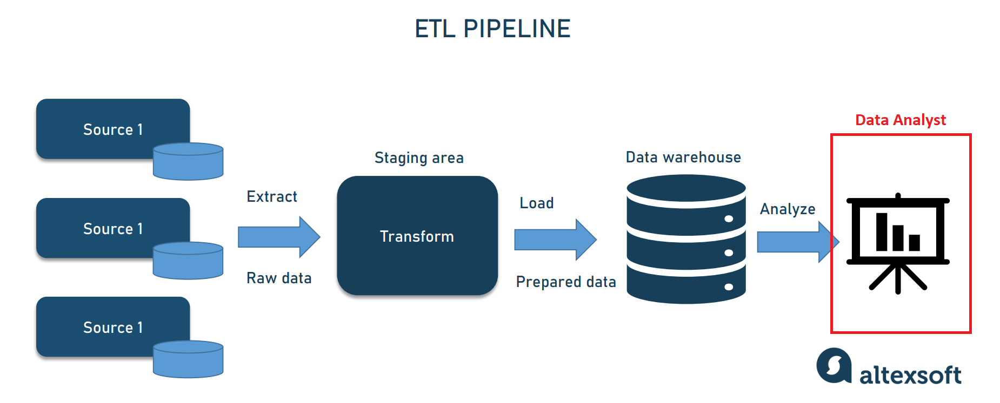

What is a Data Engineer?

A Data Engineer's goal is to make data accessible to the business. By doing this, it allows Data Analysts & Scientists to have the data needed to perform analysis on the company's performance. Everyday tasks the Data Engineer is responsible for:
- Compile datasets
- Transform the data into useful, actionable information
- Develop and maintain data pipelines (see image below)
- Ensure compliance with data governance and security policies
To summarize, Data Engineer's job is to collect and transform data to integrate with their data pipelines and verify the data is appropriately secured.
